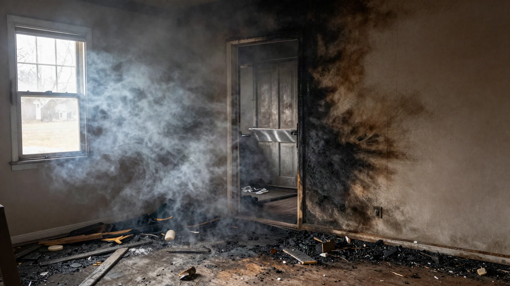

What to Do After a Household Fire: Tips From a New Jersey Public Adjuster

A household fire is two emergencies at once. The first is human: getting everyone out, dealing with the fire department, finding somewhere to sleep, and absorbing the shock. The second is a property insurance claim that starts forming immediately, whether anyone is ready for it or not, in the form of inspection notes, photographs, and a first scope written while the building still smells of smoke. This guide explains what to do after a household fire in New Jersey, in the order it actually matters, and where a licensed New Jersey public adjuster fits into that sequence.
United Claims Specialists represents property owners on claims like these. The carrier will assign its own adjuster. A public adjuster works on your side of the same file, documenting structure, contents, smoke, and temporary living costs, and handling the carrier communication that otherwise lands on a family already dealing with enough. The goal of this page is not to turn you into your own adjuster. It is to help you protect the claim during the days when you have the least capacity to manage it, and to show you what professional help on the file looks like.
The first hours: safety, shelter, and clearance
Nothing in an insurance file is worth re-entering a building that has not been cleared. Wait for the fire department to release the property and for utilities to be confirmed safe before going back inside, and follow any guidance from local officials about conditions in the building. If you are permitted to retrieve essential items such as medication, identification, and keys, keep that trip brief and practical. The detailed inventory comes later, with proper documentation, not during a rushed visit in the dark.
Arrange the immediate human needs next: a safe place to stay, care for pets, and a working phone and charger so the carrier, family, and any professionals you engage can reach you. If the residence cannot be lived in, keep receipts for lodging, meals, and other necessary costs from the first night onward. Whether and how those costs are covered depends on your policy, and the receipts are the record any later claim for additional living expense will stand on.
Give the insurance carrier prompt notice that a fire has occurred. That first notice can be short and factual: the property address, the date and approximate time of the fire, and the fact that the property is or is not habitable. You do not need to produce a theory of how the fire started, a room-by-room damage account, or a recorded narrative on the spot. Cause investigations have their own process, and careful, documented statements made later are better than exhausted guesses made immediately. A public adjuster engaged early can take over that communication and keep it accurate.
Securing the property without harming the claim
Property policies generally expect the owner to take reasonable steps to prevent further damage after a loss. After a fire, that usually means arranging board-up of broken windows and openings, securing doors, and addressing water left from firefighting before it spreads into unaffected materials. Keep the invoices for that emergency work. They are part of the claim record.
The line to respect is between protecting the property and altering the evidence. Do not begin demolition, strip out rooms, or throw away damaged contents before the loss has been documented. Smoke behavior, burn patterns, and the condition of contents all inform how the claim is scoped and, in some cases, how cause is assessed. A public adjuster and qualified remediation professionals can sequence this properly: document first, then mitigate, then scope the restoration. That order protects both the building and the claim.
What a New Jersey fire claim usually includes
Fire claims are documentation-heavy because a single event usually produces several categories of loss at once. A first scope that prices only the visibly burned room has answered the narrowest part of the question.
Structure
Beyond charred materials, structure includes framing affected by heat, roofing and windows damaged by flame or by firefighting access, and the demolition and disposal needed before rebuilding can start. Policies may contain specific limits for debris removal and separate provisions that apply when building codes require upgrades during repair, often called ordinance or law coverage, which only responds if the policy includes it. Identifying those provisions early affects how the repair is scoped and sequenced.
Smoke and soot well beyond the burn room
Smoke travels through doorways, ductwork, attic spaces, and wall cavities, and soot settles on surfaces and inside systems far from the seat of the fire. Soft furnishings, clothing, and insulation can retain odor long after hard surfaces look clean, and heating and cooling systems can redistribute residue through the building if they run before they are assessed. A complete fire scope therefore looks at the whole building, including the attic and the HVAC system, rather than treating the claim as one room with a repaint. Our fire damage insurance claims page describes how these categories fit together.
Contents
Furniture, clothing, electronics, kitchen goods, and a lifetime of ordinary possessions have to be listed, valued, and categorized as repairable, cleanable, or destroyed. That inventory is painstaking work, and it is where claims quietly shrink when items are forgotten or grouped into vague lump sums. A public adjuster builds the contents record room by room, with photographs and descriptions, and keeps damaged items available until the documentation is complete and the carrier has had its opportunity to inspect.
Additional living expense
Many property policies include coverage for additional living expense when a covered loss makes the residence uninhabitable, paying the necessary increase in living costs, such as temporary lodging, above normal spending, subject to the policy's limits and duration. The key words are in the policy: what counts, how long it runs, and what documentation is required. Keeping organized receipts from day one is what allows that coverage to do its job.
Secondary water and later complications
Water used to suppress a fire can soak floors, walls, and contents in rooms the flames never reached, and a building left without heat after a fire can suffer frozen pipes in cold weather. Those consequences belong in the same organized account of the loss, documented as they are found, so the file reads as one event with connected effects rather than a series of unrelated problems.
Replacement cost, actual cash value, and why the first check is rarely the last word
Two valuation ideas run through most fire claims. Replacement cost is, in general terms, the cost to repair or replace damaged property with materials of like kind and quality. Actual cash value typically reflects replacement cost reduced by depreciation for age and condition. Many policies pay the actual cash value first and release the withheld depreciation only after repairs are completed and documented, within the time the policy allows. Owners who do not understand that structure can mistake an initial payment for a final settlement and make repair decisions on the wrong figure.
Contents claims work through the same lens, item by item, which is one reason a vague contents list produces a vague contents payment. The fuller picture of how claims of this kind are presented is set out on our fire damage insurance claims guide and in our overview of the public adjuster process.
What a New Jersey public adjuster does on a fire claim
The role is documentation, valuation, and communication, carried out while you deal with housing, work, and family.
- Inspection and scope. A room-by-room inspection of structure, smoke, and systems, including areas with no visible burning, measured and photographed so the scope can be priced line by line.
- Contents inventory. An organized record of damaged personal property with descriptions, photographs, and valuation support, built before items are discarded.
- Policy review. Reading the actual policy for the provisions that shape a fire claim: dwelling and contents limits, additional living expense terms, debris removal, ordinance or law provisions where included, and the policy's valuation and depreciation terms.
- Deadlines and document duties. Calendaring the policy's requirements, including prompt notice, protection of the property, and any sworn proof of loss the carrier requests, with its deadline. Those dates come from your policy and applicable New Jersey requirements, and they should be identified in writing at the start, not discovered near the end.
- Carrier communication and inspections. Attending carrier inspections, responding to document requests, presenting the documented scope and estimate, and following up when documented items are omitted from the carrier's figures.
- Supplemental documentation. Where opening walls, testing systems, or cleaning reveals further damage from the same fire, presenting that additional scope with the records that tie it to the original loss.
There are also clear limits to the role, and a reputable adjuster will state them. A public adjuster is not a fire investigator determining cause for the authorities, not a contractor performing repairs, and not an attorney. Where a claim turns into a legal dispute, that is a lawyer's territory. The adjuster's lane is the insurance file: what was damaged, what it costs to restore, and how that is documented and presented.
Choosing a public adjuster in New Jersey
Start with the license. Public adjusters are licensed by state, and for a New Jersey property you should verify that the adjuster holds a New Jersey public adjuster license, which can be checked through the state insurance regulator, before signing an agreement. Ask who will inspect the property and attend carrier inspections, how the fee is calculated, and make sure that arrangement is set out in a written agreement you keep. Ask what documentation you will receive and how often you will hear from the adjuster as the claim moves.
Local familiarity helps because fire claims are handled where the building stands. United Claims Specialists serves property owners across New Jersey, including Bergen County and Hackensack, and the state picture is set out on our New Jersey public adjuster page. If you are comparing firms, the questions above will separate a professional claim practice from a salesperson with a business card faster than any advertisement.
Mistakes that quietly weaken fire claims
- Discarding contents too early. Once items are gone, they are hard to document, value, or present for inspection.
- Cleaning or repainting before smoke is assessed. Early cosmetic work can seal in odor and erase the record of how far soot traveled.
- Long, speculative statements about cause. Keep early accounts short and factual. Documented statements made after inspection serve the file better.
- Losing the additional living expense paper trail. Lodging and meal receipts from the first nights are the hardest to reconstruct later.
- Treating the first scope as final. Fire damage continues to reveal itself as rooms are opened and systems are tested. Documented supplemental scope exists for exactly that reason, subject to the policy's timing and proof requirements.
- Missing policy deadlines. Notice, proof of loss, and repair-completion periods for recoverable depreciation all carry dates. They belong on a calendar from the first week.
Frequently asked questions
What should I do first after a household fire in New Jersey?
Make sure everyone is safe, wait for the fire department to clear re-entry and utilities to be confirmed safe, arrange temporary shelter, and give the carrier brief, factual notice of the loss. Preserve the scene and damaged contents until the loss has been documented, and keep receipts for emergency and living expenses from the first day.
Should I let the carrier's adjuster be the only adjuster on the claim?
The carrier's adjuster represents the insurer. A licensed public adjuster represents you, documents the full scope of structure, contents, smoke, and additional living expense, and handles carrier communication on your side. On a significant fire loss, that second, independent documentation is the core of the service.
Does property insurance cover temporary housing after a fire?
Many policies include additional living expense coverage when a covered loss makes the residence uninhabitable, subject to the policy's limits, duration, and documentation requirements. Keep organized lodging and meal receipts from the first night so the expense can be substantiated.
What if more damage is found after the first inspection?
That is common in fire claims, where opening assemblies and testing systems reveals damage the first visit could not see. Documented additional damage from the same fire can be presented as a supplemental scope, subject to the policy's notice, proof, and timing requirements, which is a reason to keep deadlines calendared and evidence preserved.
How do I verify a New Jersey public adjuster?
Confirm that the adjuster holds a New Jersey public adjuster license, verifiable through the state insurance regulator, and that the fee arrangement is explained in a written agreement before work begins. Ask who will inspect the property, attend carrier inspections, and communicate with the insurer on your claim.
A steady next step
If your household is dealing with a fire in New Jersey and you would like a licensed public adjuster to carry the claim file while you focus on housing and family, United Claims Specialists can review the situation and explain what the documentation needs to look like. That conversation carries no pressure and no promised outcome. You can begin through insurance claim help or contact us, or call 855-321-5677.